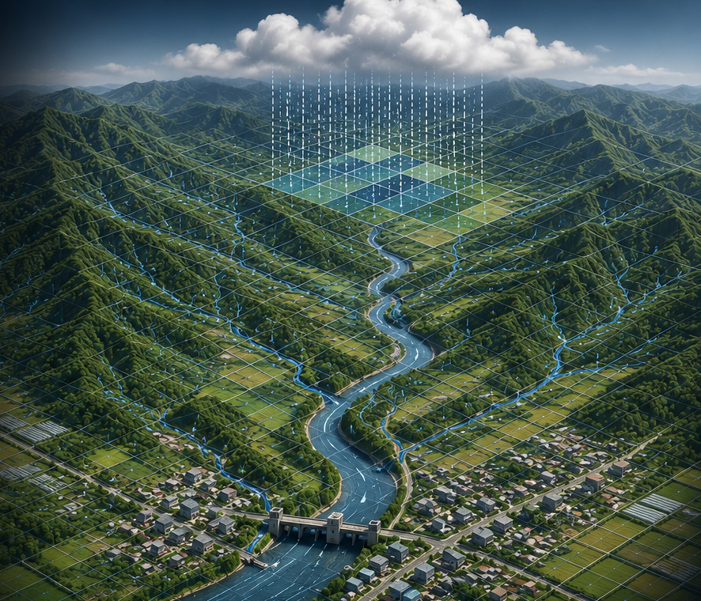

Grid-based distributed modeling
Rainfall, terrain and hydrologic response are resolved continuously over computational grids.
Distributed hydrology · river hydraulics · flood analysis


K-water Grid-based Distributed Rainfall rUnoff Model
K-DRUM is a physically based, grid-distributed hydrologic model developed by K-water.
It represents rainfall, infiltration, surface and subsurface runoff, and river flow spatially, and is being extended to 1D river hydraulics and 2D floodplain analysis.

Rainfall, terrain and hydrologic response are resolved continuously over computational grids.
Rainfall, infiltration, surface runoff and subsurface runoff are linked through physically based processes.
Dynamic-wave river flow and hydraulic structure operation are represented in one dimension.
Grid-based two-dimensional analysis predicts flood propagation and inundation extent.
The workflow connects meteorological forcing, watershed hydrology, river and floodplain calculations, and result analysis.
Spatial rainfall, Green-Ampt infiltration, surface and subsurface runoff, kinematic-wave routing, long-term hydrology and snowmelt.
Cross-section-based 1D dynamic-wave river networks, hydraulic structures and 2D floodplain simulation are under active development and testing.
Bidirectional discharge exchange and coupled water-balance behavior between river and floodplain domains are being tested.
FloodViewer displays spatial and temporal hydrologic and hydraulic results using maps, time series and plots.
Detailed maturity is maintained in Development status.
Distributed flood-runoff analysis using spatial and radar rainfall.
Long-term water balance and hydrologic analysis including snow accumulation and melt.
Long-term hydrology and watershed water-balance studies.
MPI-based parallel computation for distributed rainfall-runoff modeling.
Water-cycle studies linking K-DRUM with groundwater models.
Runoff-response analysis following wildfire damage and extreme rainfall.
The current platform separates computational, project-authoring and result-analysis roles while keeping them connected through shared model inputs and outputs.
The main engine for distributed hydrology and current river/flood calculations.
Creates project settings, time series, terrain and cross-section data, and model input files.
Analyzes hydrologic and hydraulic results using maps, time series and plots.
A reusable module for high-resolution terrain, channel geometry and synthetic channel-bed generation.
NetCDF-centered output is used for exchange between the computational engine and Viewer.
A separate research prototype for longitudinal-vertical estuarine hydrodynamics and salinity.
K-DRUM is included in K-water's MyWater K-Series technical-software context.